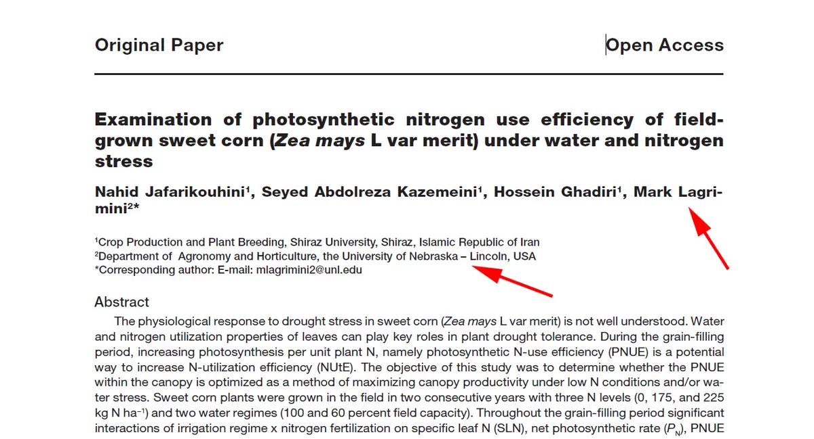
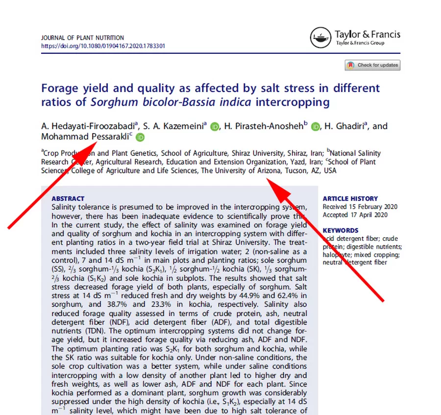
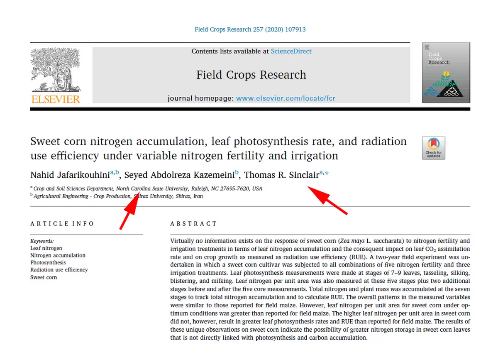
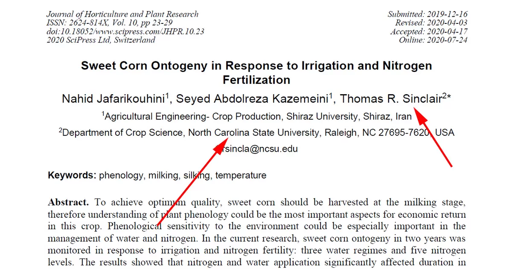

Among the papers associated with the systematic corruption cases at Shiraz University that we investigated, a clear pattern of toxic scientific collaboration emerged:
The phenomenon of “rent-a-corresponding authors.”
The pattern was straightforward.
The authors at Shiraz University—including supervisory faculty members and students—would prepare drafts of their papers and research reports which, as we have seen in the previous three posts, were produced under highly questionable circumstances.
These drafts would then be sent to mostly well-known professors at universities outside Iran.
Those professors, often with little commitment to verifying the underlying data or claims, would submit the final manuscripts to supposedly reputable scientific journals.
In this way, both sides benefited from the arrangement.
I came to think of this pattern as the phenomenon of “rent-a-corresponding authors.”
We contacted these rent-a-corresponding authors at three American universities:
The University of Nebraska–Lincoln, the University of North Carolina, and the University of Arizona.
Some never responded.
Others responded with open arrogance and formally defended the scientific deception.
Their responses will be discussed in future posts.



